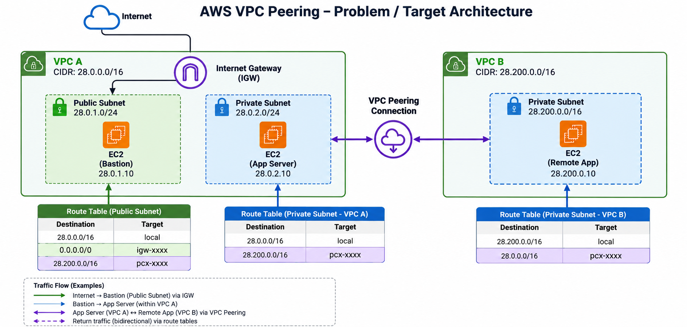

AWS VPC Peering & Private Connectivity
A hands-on cloud networking project demonstrating private communication between EC2 instances in two separate Amazon VPCs.
The image below is the supplied problem/target architecture, not an exact diagram of the lab that was implemented.


Resources in separate VPCs are isolated by default. The objective was to configure VPC peering, route traffic between the two VPC CIDR blocks, apply appropriate security rules, and verify private-IP communication between EC2 instances.
Internship context
EWB Edutech Private Limited · AWS Cloud Computing Internship
Duration: 1 month · September–October 2026 · Remote
- Region: US East (Ohio),
us-east-2 - VPC 1:
EWB_AWS_Internship_VPC1—28.0.0.0/16 - VPC 2:
EWB_AWS_Internship_VPC2—28.200.0.0/16 - Peering connection:
EWB_VPC_Peering, shown as Active in supplied evidence - VPC 1 EC2 instance had a public IPv4 address during testing; VPC 2 EC2 instance had no public IPv4 address.
- VPC 2 subnet: Name not verified from available evidence.
- The lab CIDRs
28.0.0.0/16and28.200.0.0/16are not RFC 1918 private IPv4 ranges and should not be copied into a production design without review.
- Created and inspected the VPC peering connection.
- Configured route tables to send peer-CIDR traffic through the peering connection.
- Configured SSH and ICMP security-group rules for connectivity testing.
- Used SSH/proxy access and ping tests to validate reachability between private IPs.
- Recorded a controlled ICMP failure, recovery test, and cleanup evidence.
The supplied terminal screenshots show successful forward and reverse ping sessions with four packets received and 0% packet loss. Separate screenshots document a controlled failure and subsequent recovery. These observations describe the captured test sessions, not the current state of AWS resources.
Limitations
This was a learning environment rather than a production design. A production implementation would require security review, least-privilege access, monitoring, and validation of every route and subnet association.
Each screenshot has a descriptive name and an explanation on the detailed project page.
Open the full evidence gallery ↗
The full project report and target architecture are included in this portfolio package. Project source and evidence are also available in: EWB-AWS-Internship on GitHub.